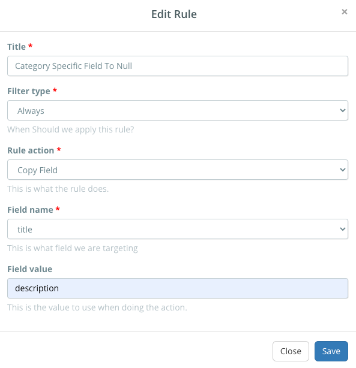

Learn how to create and manage your listing rules to automate tasks in Listing Mirror
Listing Rules can be used to automate simple tasks regarding your listing data.
They're simple "if, then" statements that allow you to modify your data when another piece of data meets the given criteria.
Rules can accomplish countless tasks, but here are some common examples.
Listing rules can also help you increase the profits of your business.
Learn more
- Change the Brand field based on the title of the listing.
- Change eBay's Listing Duration field.
- Change categories for a listing based on keywords in the title or description.
- Change category-specific fields based on keywords in the title or description.
- Increase or decrease the price of items using percentages, or a fixed number.
The listing rules page can be found under the listing tab on the menu bar.
What does each of the fields mean?
- Title: A brief description of what the rule does.
- Filter Type: Tells the rule when to run.
- (Optional) Filter Field Name: Searches for a field to run based on.
- (Optional) Filter Value: Searches for the data in the previously provided field.
- If a comma is used, the rule will only run if the data field has all parts.
- Rule Action: Tells the rule what to do when criteria is met.
- Field Name: The field you want to change.
- (Optional) Field Value: The data you want to input.
Creating a listing rules
Listing rules can be created on an integration basis only.
They cannot interact with the Product Catalog, or other marketplaces.
- From the menu bar, click Listings, followed by Listing Rules.
- Under a marketplace, click Create.
- In Title, provide a brief description of what the rule does.
- Execute what you want the rule to do in the following fields.
- Click Save.
Once you've created your rule, it will only affect new listings created.
Creating a rule will not automatically update existing listings.
If you need to update existing listings, click Run under the created rule.
Example
Below, you'll see an example where a user wants to always replace their description with their title.

Unique use cases, and how to handle them
Listing rules are an advanced feature, and require a more in-depth understanding before fully utilizing.
Below, you'll find common examples of complexities.
This listing is always expanding.
If you have suggestions,
contact support
with your suggestion.
eBay Listing Duration
When creating a listing rule to change the listing duration, the Field Value must be set with a specific value.
- 3 Days should be Days_3
- 5 Days should be Days_5
- 7 Days should be Days_7
- 10 Days should be Days_10
- 30 Days should be Days_30
- Good 'Til Cancelled should be GTC